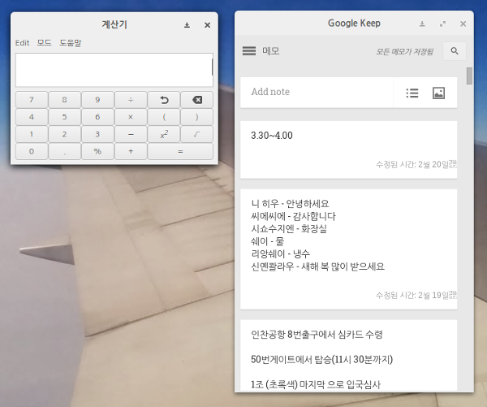
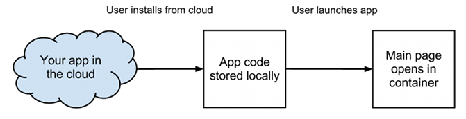
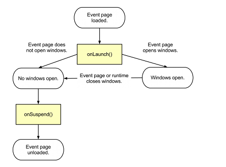

chrome
packaged apps
&
yeoman
Youngbin Han
hello :)
"한영빈"
시온고등학교 학생
Cuvic(청소년 스타트업) 안드로이드 앱 삽질담당
sukso96100@gmail.com
sukso96100.github.io
chrome
packaged
apps

- 웹앱이지만, 마치 네이티브 앱 처럼 작동함. ( 크롬API를 사용하여 알림을 띄우거나 스토리지 접근 등도 가능.)
-
(당연하게도) 크롬 브라우저 위에서 작동.
-
웹앱이니. HTML, JavaScript, CSS 등의 웹 개발 언어로 코드를 작성함
-
오프라인 우선
offline first

-
앱을 스토어에서 다운로드 및 설치.
-
앱에 포함된 코드(HTML,JS,CSS)또한 다운로드되어 저장됨.
-
앱을 실행하면, 다운로드된 앱 내부의 코드가 실행됨.
life cycle

inside chrome packaged apps
-
Manifest (manifest.json)
-
Background Script (background.js)
-
window page (window.html)
-
Icons (*.png)
manifest.json
{
"manifest_version": 2, //Manifest 버전 (Packaged Apps는 버전2)
"name": "Hello World!", //앱 이름
"description": "My first Chrome App.", //앱 설명
"version": "0.1", //앱 버전
"app": { //Packaged Apps는 Background Script, Hosted Apps는 URL
"background": {
"scripts": ["background.js"] //실행할 Background Script 지정
}
},
//사용할 앱 아이콘 지정
"icons": { "16": "icon-16.png", "128": "icon-128.png" }
}
background.js
//크롬앱 켜질때 실행되는 코드
chrome.app.runtime.onLaunched.addListener(function() {
//윈도우 하나 새로 띄우기
//window.html - 윈도우 에 띄울 컨텐츠
chrome.app.window.create('window.html', {
'bounds': {
'width': 400,
'height': 500
}
});
}); window.html
<!--윈도우에 표시할 컨텐츠 작성-->
<!DOCTYPE html>
<html>
<head></head>
<body>
<div align="center">
<h1>Hello, World!<h1>
</div>
</body>
</html>
test it
-
크롬 브라우저 메뉴버튼 > 도구 > 확장 프로그램 누르기.
-
"개발자 모드" 체크하기.
-
"압축해제된 확장 프로그램 로드" 눌러서, 크롬앱 폴더를 선택하고 불러오기.
-
크롬 브라우저에서 새 탭 열거나, 크롬OS의 경우 앱 런처 열고 로드한 앱 선택하여 실행하고 테스트하기.
Content Security Policy (CSP)
- 앱 페이지에서 인라인 스크립팅은 허용되지 않습니다.
- 허용 안되는 코드 예시
- <script>...</script>
- <button onclick="...">
- 외부 리소스를 앱 파일에서 참조하거나(오디오와 비디오 제외), iframe 에서 삽입(Embed)할 수 없습니다.
- 문자열이나 텍스트를 실행가능한 자바 스크립트로 변환하는 코드는 사용할 수 없습니다.
- 사용할수 없는 코드 예시
- eval(), new Function(), setTimeout([string], ...), setInterval([string], ...)
learn more...
크롬 개발자 사이트
An Introduction to Content Security Policy
yeoman

"웹앱 개발하면서 귀찮은 일들을 줄여 드립니다"
yeoman?
모던 웹앱 개발을 좀더 쉽고 빠르게 개발 할수 있도록
도와주는 워크플로(작업흐름) 도구
inside yeoman
yo
웹앱 개발에 필요한 기본적인 파일들을 구성해주는 도구
Grunt
웹앱 프로젝트 빌드 및 테스트 도구
Bower
의존성 문제를 관리하는 도구
install
-
Node.js 가 설치 되어있어야 합니다. 그렇치 않으면 설치하세요.(nodejs.org 에서 다운로드 받아 설치)
- 콘솔창을 열고, 아래와 같은 npm 명령어로 Yeoman을 설치합니다.
-
npm install -g yo - 설치끝.
create chrome app with yeoman
크롬앱 제네레이터 설치
npm install -g generator-chromeapp크롬앱 프로젝트 생성(필요한 파일 구성)
yo chromeapp기본적인 의존성 문제 해결
(yo 로 프로젝트 생성시 자동으로 같이실행됨)
bower installBower로 AngularJS 검색
bower search angularjsBower로 AngularJS 추가
bower install angularjs웹앱 테스트(크롬앱은 크롬에서 직접 로드하여 테스트해야함)
grunt test웹앱 미리보기
(크롬앱은 크롬에서 직접 로드하여 테스트해야함)
grunt server웹앱 빌드
gruntlearn more...
YEOMAN
YEOMAN Wiki
get this slide
http://sukso96100.github.io/chrome-packaged-apps-and-yeoman